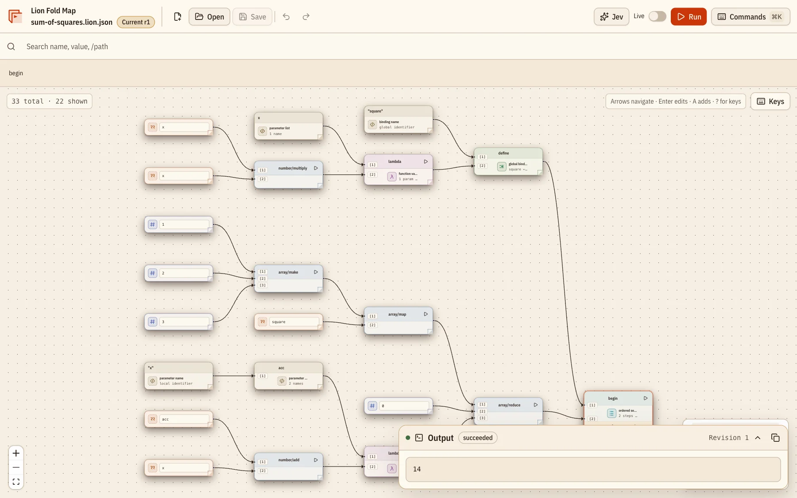

Homoiconic
Programs are plain arrays and objects. Generate, rewrite, and analyze code with the same tools you use for data.
Lion is a homoiconic Lisp where every program is valid JSON. Store it, send it, generate it, and evaluate it on a type-safe Effect runtime.
["number/add",
["number/multiply", 3, 4],
["number/subtract", 10, 5]]17
The background is a live expression graph. Move to bend it, click to send an evaluation through it.
One format for code and data, so programs can be stored, shipped, generated, and inspected by anything that speaks JSON.
Programs are plain arrays and objects. Generate, rewrite, and analyze code with the same tools you use for data.
Store programs in a database, stream them over an API, or diff them in Git. It's just JSON.
The evaluator runs on Effect 4.1. Inputs are validated with Schema, and failures are typed errors you can catch and recover from.
Spread your own values, functions, and classes into the
environment. object/new and
func/callback
let Lion drive real JavaScript APIs.
The Fold Map editor keeps a semantic graph and the exact JSON source in sync, and runs programs against the standard library.
Models already write JSON. Let them write Lion, and call TypeSafe
AI's Jev primitives from inside programs with
@lionlang/typesafe-ai.
Every card is a live editor running @lionlang/core in
your browser. Change a program and it re-runs as you type, or press
⌘/Ctrl
+ Enter.
Function calls use prefix notation inside JSON arrays.
["number/multiply",
["number/add", 1, 2],
4]12Lambdas close over lexical scope; define binds globally.
["begin",
["define", "inc",
["lambda", ["x"],
["number/add", "x", 1]]],
["inc", 41]]42cond returns the first matching branch; else is optional. Try another score.
["begin",
["define", "score", 82],
["cond",
[["number/greaterThan", "score", 90], "great"],
[["number/greaterThan", "score", 70], "pass"],
["else", "retry"]]]"pass"match applies the first branch whose predicate accepts the value. Try matching a number instead.
["match", "roar",
["value/number?",
["lambda", ["x"], ["number/add", "x", 1]]],
["value/string?",
["lambda", ["x"], ["string/concat", "x", "!"]]],
["lambda", ["x"], "x"]]"roar!"Objects keep their keys and evaluate each value.
{
"sum": ["number/add", 1, 2],
"ok": true
}{"sum":3,"ok":true}quote holds code as data; eval runs it when you choose.
["begin",
["define", "code",
["quote", ["number/add", 1, 2]]],
["eval", "code"]]3
Declare relations, add facts, and write recursive rules and
aggregates in the same JSON as the rest of your program. Queries
return plain Lion data, and why shows the rules and
facts behind any answer. These cards are live too. Read the
logic guide
for every form.
A rule can use its own relation, so path follows
edges any distance. Add another edge and the answer grows.
["begin",
["relation", "edge", ["from", "to"]],
["relation", "path", ["from", "to"]],
["fact", ["edge", "a", "b"], ["edge", "b", "c"],
["edge", "c", "d"]],
["rule", ["path", "?x", "?y"], ["edge", "?x", "?y"]],
["rule", ["path", "?x", "?z"],
["path", "?x", "?y"], ["edge", "?y", "?z"]],
["query", ["path", "a", "?to"]]][{"to":"b"},{"to":"c"},{"to":"d"}]
not
holds when nothing matches. Add
["done", "test"]
to the facts and
ship
becomes ready.
["begin",
["relation", "task", ["id"]],
["relation", "needs", ["task", "dep"]],
["relation", "done", ["task"]],
["relation", "blocked", ["task"]],
["fact", ["task", "build"], ["task", "test"],
["task", "ship"]],
["fact", ["needs", "test", "build"],
["needs", "ship", "test"], ["done", "build"]],
["rule", ["blocked", "?t"],
["needs", "?t", "?d"], ["not", ["done", "?d"]]],
["query", ["and", ["task", "?ready"],
["not", ["done", "?ready"]],
["not", ["blocked", "?ready"]]]]][{"ready":"test"}]
Pure functions called on ?variables become filters,
and = binds a computed value. Try another budget.
["begin",
["define", "budget", 100],
["relation", "spend", ["team", "amount"]],
["fact", ["spend", "web", 80], ["spend", "data", 140],
["spend", "infra", 260]],
["query", ["and", ["spend", "?team", "?amount"],
["number/greaterThan", "?amount", "budget"],
["=", "?over", ["number/subtract", "?amount", "budget"]]]]][
{"team":"data","amount":140,"over":40},
{"team":"infra","amount":260,"over":160}
]
why
returns the rules and facts that derived an answer. Ask about
another path.
["begin",
["relation", "edge", ["from", "to"]],
["relation", "path", ["from", "to"]],
["fact", ["edge", "a", "b"], ["edge", "b", "c"]],
["rule", ["path", "?x", "?y"], ["edge", "?x", "?y"]],
["rule", ["path", "?x", "?z"],
["path", "?x", "?y"], ["edge", "?y", "?z"]],
["why", ["path", "a", "c"]]]{
"fact": ["path","a","c"],
"rule": [
"rule",
["path","?x","?z"],
["path","?x","?y"],
["edge","?y","?z"]
],
"because": [
{
"fact": ["path","a","b"],
"rule": ["rule",["path","?x","?y"],["edge","?x","?y"]],
"because": [{"fact":["edge","a","b"],"given":true}]
},
{"fact":["edge","b","c"],"given":true}
]
}
An aggregate/… call in a rule head combines every
match, grouped by the head's other columns. Add an order and the
totals change.
["begin",
["relation", "order", ["id", "customer", "amount"]],
["relation", "spend", ["customer", "total", "orders"]],
["fact", ["order", 1, "ana", 30], ["order", 2, "ana", 20],
["order", 3, "bo", 50], ["order", 4, "bo", 15]],
["rule",
["spend", "?c", ["aggregate/sum", "?amount"],
["aggregate/count", "?id"]],
["order", "?id", "?c", "?amount"]],
["query", ["spend", "?customer", "?total", "?orders"]]][
{"customer":"ana","total":50,"orders":2},
{"customer":"bo","total":65,"orders":2}
]
aggregate/min
only moves down, so a recursive rule can use it and still finish.
Add a shortcut road and watch the distances drop.
["begin",
["relation", "road", ["from", "to", "km"]],
["relation", "dist", ["to", "km"]],
["fact", ["road", "a", "b", 4], ["road", "a", "c", 1],
["road", "c", "b", 2], ["road", "b", "d", 5]],
["rule", ["dist", "?to", ["aggregate/min", "?km"]],
["road", "a", "?to", "?km"]],
["rule",
["dist", "?to",
["aggregate/min", ["number/add", "?d", "?km"]]],
["dist", "?via", "?d"], ["road", "?via", "?to", "?km"]],
["query", ["dist", "?to", "?km"]]][{"to":"c","km":1},{"to":"b","km":3},{"to":"d","km":8}]
A record after the goal sorts and pages the answers. A leading
-
sorts descending. Raise the limit or sort by
"player".
["begin",
["relation", "game", ["player", "points"]],
["relation", "total", ["player", "points"]],
["fact", ["game", "ana", 12], ["game", "bo", 30],
["game", "cy", 18], ["game", "ana", 9], ["game", "cy", 14]],
["rule", ["total", "?p", ["aggregate/sum", "?n"]],
["game", "?p", "?n"]],
["query", ["total", "?player", "?points"],
{"order": "-points", "limit": 2}]][{"player":"cy","points":32},{"player":"bo","points":30}]
in
binds a variable to each item of a list stored in a fact. Tag
another post with "json", or ask for
"logic".
["begin",
["relation", "post", ["id", "tags"]],
["relation", "tagged", ["tag", "post"]],
["fact",
["post", "p1", ["array/make", "lisp", "json"]],
["post", "p2", ["array/make", "json", "logic"]]],
["rule", ["tagged", "?tag", "?p"],
["post", "?p", "?tags"], ["in", "?tag", "?tags"]],
["query", ["tagged", "json", "?post"]]][{"post":"p1"},{"post":"p2"}]
Algorithms such as graph/pageRank and
graph/shortestPath
are goals too. Link another page to "faq" and watch
the ranks shift.
["begin",
["relation", "link", ["from", "to"]],
["fact", ["link", "home", "docs"], ["link", "home", "blog"],
["link", "blog", "docs"], ["link", "docs", "home"],
["link", "faq", "docs"]],
["query", ["graph/pageRank", "link", "?page", "?rank"],
{"order": "-rank"}]][
{"page":"docs","rank":0.394149},
{"page":"home","rank":0.372527},
{"page":"blog","rank":0.195824},
{"page":"faq","rank":0.0375}
]A query with a known argument derives only what it can reach. All paths along these 3,000 edges would be 4.5 million rows; this query needs three. Try another start.
["begin",
["relation", "edge", ["from", "to"]],
["relation", "path", ["from", "to"]],
["rule", ["edge", "?n", ["number/add", "?n", 1]],
["in", "?n", ["array/range", 0, 3000]]],
["rule", ["path", "?x", "?y"], ["edge", "?x", "?y"]],
["rule", ["path", "?x", "?z"],
["edge", "?x", "?y"], ["path", "?y", "?z"]],
["query", ["path", 2997, "?to"]]][{"to":2998},{"to":2999},{"to":3000}]A local-first semantic graph and exact JSON workbench. The source text stays canonical while the graph, outline, inspector, diagnostics, and results track explicit revisions.
@lionlang/cli. No monorepo checkout
needed.
bun add --dev @lionlang/cli
bun run lion repl
All packages are MIT licensed and built on Effect 4.1.
The evaluator, special forms, the standard library, and the built-in logic layer.
bun add @lionlang/core effect
The lion command: evaluate Lion JSON files and serve
the bundled graph editor.
bun add --dev @lionlang/cli
TypeSafe AI and Jev bindings: typesafe/noul,
typesafe/choice, typesafe/score,
typesafe/system-one, and
typesafe/models.
bun add @lionlang/typesafe-aiEvaluate Lion from TypeScript, or straight from your terminal.
bun add @lionlang/core effectimport { Effect } from "effect";
import { run } from "@lionlang/core/evaluation/evaluate";
import { stdlib } from "@lionlang/core/modules";
const result = await Effect.runPromise(
run(["number/add", 1, 2], stdlib)
);
// => 3const env = {
...stdlib,
price: 100,
taxRate: 0.08,
};
await Effect.runPromise(
run(["number/add", "price",
["number/multiply", "price", "taxRate"]], env)
);
// => 108bun add --dev @lionlang/cli
bun run lion program.json # evaluate a file
bun run lion repl # serve the graph editorWrite your first program in plain JSON, then watch it run in your terminal, your app, or the graph editor.